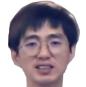
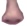

케인 초상화
'케인'이라는 닉네임은 WWE 소속의 프로레슬러 케인에서 이름이
유래했는데, 아프리카에서 BJ로 활동하던 시절 레슬러 케인의 가면을
쓰고 캠 방송을 해서 그렇다. 그런데 나중에 캠이 켜진 걸 모르고 "아우
더워"하며 가면을 벗는 바람에 얼굴이 드러났고, 그 다음부턴 얼굴을
공개하고 방송을 한 게 지금까지 이어져오고 있는 것. 타지리나 커트
앵글과 같은 프로레슬러가 케인의 밈이 된 것도 여기에 관련되어 있다.
동물을 상당히 좋아한다. 특히 고양이를 좋아하며 개, 고양이, 햄스터,
소, 돼지, 양, 오리, 코끼리 등 별 동물을 가리지 않고 동물은 대개
좋아하는 편. 파충류, 조류, 양서류는 물론 귀뚜라미, 잠자리 같은
곤충도 싫어하지 않으며 병원균을 옮기는 곱등이와 바퀴벌레를 제외한
모든 동물들을 미워하지 않는다고 한다. 그리마 조차 "그래 바퀴벌레
잡아먹고 살렴~" 이라며 오히려 집에 등장한 걸 안심했다고. - 출처
나무위키

